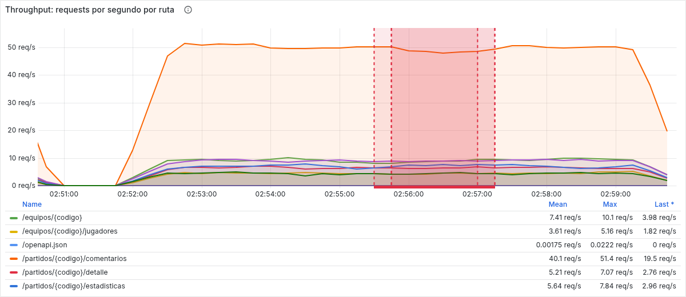
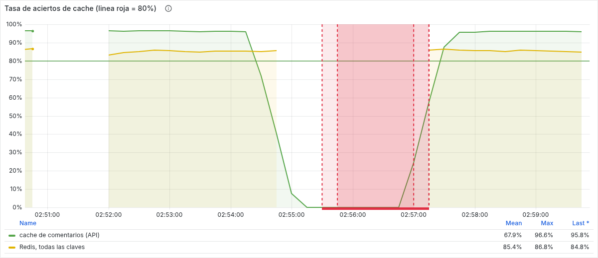

Ingeniería de Datos II · Grupo 8 · Hito 13
Seis modelos de datos, una API y un sistema que se observa a sí mismo
¿Por qué esta combinación de modelos, estructuras, distribución y observabilidad es adecuada para el Fixture 2030?
| Dato | Volumen (Hito 1) | Acceso dominante |
|---|---|---|
| Equipos y jugadores | 64 y 1.500+ | Lectura de la ficha |
| Partidos y eventos | 1.000+ eventos por partido | Recorrer relaciones |
| Comentarios | 1 M+ por partido | Escritura masiva sostenida |
| Sesiones | 2-3 M simultáneas | Validar en < 1 ms, vencer |
| Estadísticas en vivo | 10 M+ puntos por partido | Ventanas y agregación |
| Partido con reglas | Estado, eventos, terna | Invariantes al guardar |
< 100 ms
p95 de las consultas
99,99 %
disponibilidad
6 países
multirregión
Conclusión del Hito 1: ningún motor único sostiene a la vez esquemas heterogéneos, relaciones profundas, escritura masiva y agregación temporal con esas condiciones.
Y su costo, escrito desde el principio: cada motor suma infraestructura para instalar, mantener y monitorear.
| Base | Estructura implementada | Qué sería caro con otra estructura |
|---|---|---|
| MongoDB | Documentos validados (JSON Schema estricto), referencia jugador → equipo, 7 índices por consulta | En SQL, la ficha completa son 3-4 joins y cada campo nuevo es un ALTER TABLE |
| Neo4j | 5 etiquetas, 5 relaciones; el gol es un nodo | "Goleadores con su equipo" en documentos: varias consultas y un join a mano en la aplicación |
| Cassandra | Partición (partido_id, ventana 5 min), orden por creado_en DESC | Un índice relacional por tiempo concentra todas las escrituras del partido en el mismo extremo |
| Redis | Sesión = Hash con TTL de 1.800 s; caché del feed con TTL de 2 s; volatile-lru | Sin TTL nativo hacen falta jobs de borrado; en disco no se sostiene < 1 ms |
| InfluxDB | Tags solo para lo que se filtra; agregación según el significado de cada medida; resumen de 1 minuto | "Posesión promedio cada 5 min" sobre millones de filas con GROUP BY, sin retención |
| IRIS | Partido con estado; eventos y terna como hijos; herencia de Persona | En documentos o en SQL, la regla "sin eventos antes de EnJuego" queda en cada aplicación |
| Clave de partición | Pico por partición (partido extremo) |
|---|---|
Solo partido_id | 1.000.000 de filas ≈ 162 MiB, sin límite |
(partido_id, ventana 15 min) | ≈ 279.000 filas ≈ 45 MiB |
(partido_id, ventana 5 min) | ≈ 93.000 filas ≈ 15 MiB (elegida) |
(partido_id, ventana 1 min) | ≈ 18.600 filas, pero un partido chico necesita 2+ particiones por feed |
Estimaciones de diseño del Hito 6. Medido sobre 1,1 M de comentarios: 2.688 particiones, mediana de 215 filas, máximo de 12.087.
| Dato | Postura | Qué puede ser eventual |
|---|---|---|
| Equipos, jugadores, partidos y goles | CP | Nada: un resultado oficial no se lee viejo. Escritura por mayoría. |
| Comentarios | AP | Orden y visibilidad entre regiones; la caché suma hasta 2 s |
| Sesiones | AP | Se acepta perder una sesión: el usuario se vuelve a autenticar |
| Estadísticas en vivo | AP | Puntos tardíos o desordenados; la ingesta no se detiene |
| Partido con reglas (IRIS) | fuerte en el objeto | Nada: la invariante se aplica al guardar |
Cada estructura vuelve barata una operación y cara otra. La partición por ventana que absorbe un millón de comentarios no sirve para recorrer gol → jugador → equipo, y el grafo no está hecho para 10 M de puntos por partido.
La API mide cada request y cada llamada a cada base: latencia, throughput, errores, caché y escrituras por partido.
Instrumentación propia
Exporters de Redis y MongoDB; /metrics nativo de InfluxDB (con token) e IRIS.
Lo que pasa dentro del motor
TCP, PING de Redis y HTTP: "¿la base acepta conexiones?". Única vista posible de Neo4j Community y Cassandra sin JMX.
Lo que vería un cliente
| SLI | SLO del laboratorio | Alerta | Decisión que habilita |
|---|---|---|---|
| Disponibilidad por base | chequeo OK | BaseNoDisponible (crítica, 1 min) | Qué funcionalidad está degradada |
| p95 de la API | < 50 ms (SLA del TPO: 100 ms) | LatenciaAPIp95SobreSLO | Mirar la latencia por base antes que la API |
| 5xx / total | < 1 % | TasaErrores5xxAlta (crítica) | ¿Es una base (503) o la API (500)? |
| Aciertos de caché | ≥ 80 % | CacheComentariosDegradada | Anticipar la carga sobre Cassandra |
| Memoria de Redis | < 85 % (Clase 14) | RedisMemoriaAlta | Ampliar antes de desalojar sesiones |
Corrida final 20261126-054628 · 20 usuarios virtuales · mezcla de las 6 bases · docker stop real bajo carga
| A. Redis cae | Normal | Falla | Recup. |
|---|---|---|---|
| Requests/s de la API | 92,1 | 88,5 | 91,1 |
| p95 de la API | 23,7 ms | 32,8 ms | 26,9 ms |
| Aciertos de caché | 96 % | 0 % | 96 % |
| Lecturas a Cassandra/s | 1,4 | 35,5 | 1,4 |
| 5xx (solo sesiones) | 0 % | 5 % | 0 % |
Detección: la métrica a los +15 s; BaseNoDisponible crítica a los +90 s. Vuelve +15 s después del docker start.
B. Cassandra cae: solo comentarios da 503; Mongo, Neo4j e IRIS siguen en 200. Alerta a los +85 s.
Sin el corte rápido (corrida 1): 53,6 → 9,4 requests/s y p95 de comentarios de 4,9 s.


Franja roja: alerta en firing. Capturas generadas por capturar_dashboard.py con el rango exacto de la prueba.
Todo corre en una sola máquina (Docker Desktop): bases, API, monitoreo y generador de carga comparten CPU.
--sin-cortocircuito) y alerta de 5xx con mínimo de tráfico./salud liviano para balanceadores, separado del chequeo profundo.No decimos que sea perfecta: mostramos qué resuelve cada base, qué cuesta y cómo nos damos cuenta cuando algo falla.